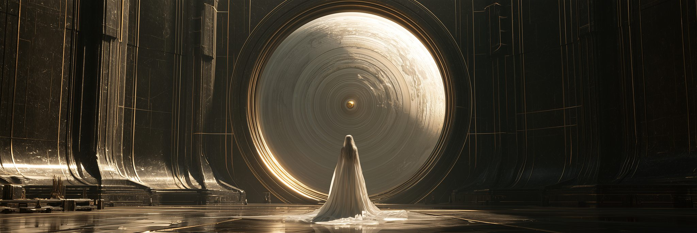
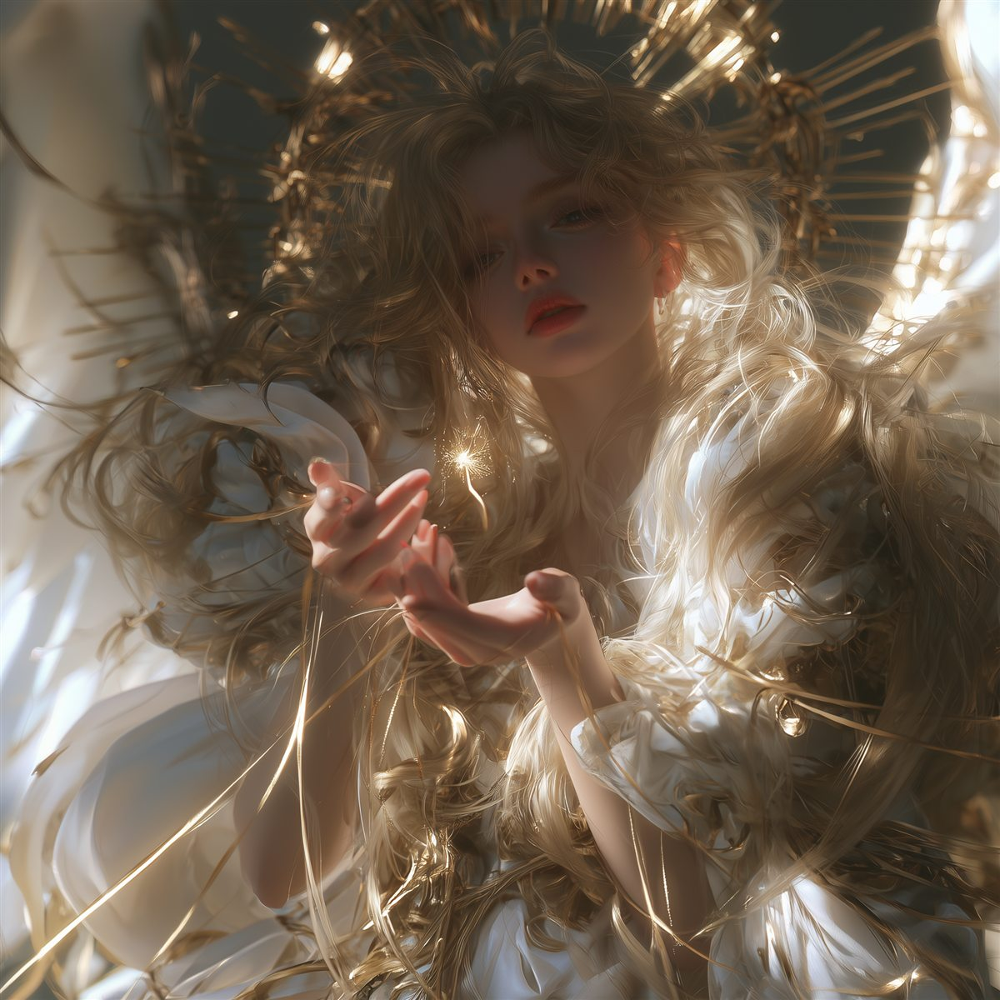
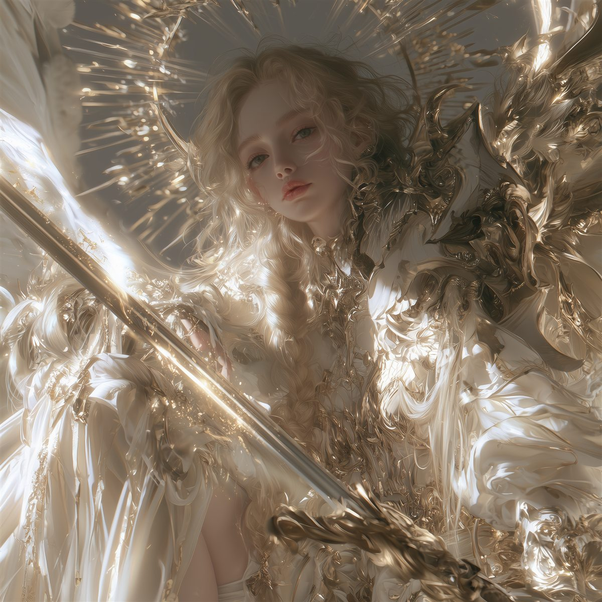
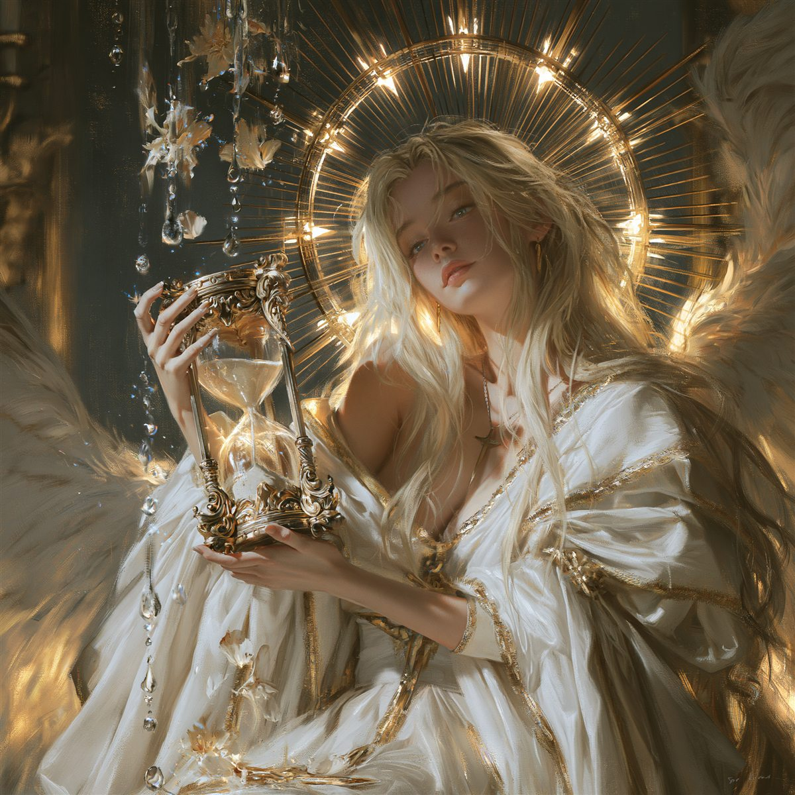
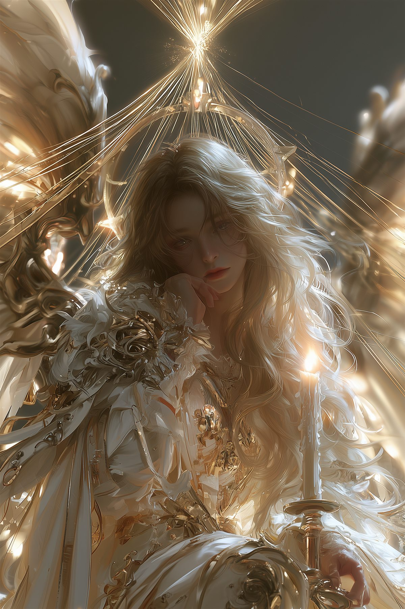
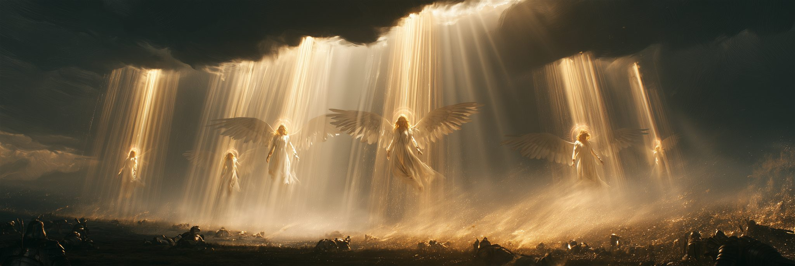
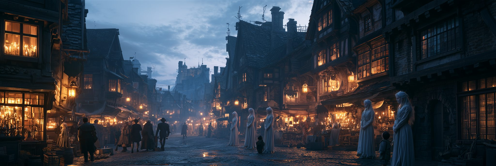

절대신부터 이름 없는 하위천사까지 여섯 계급. 보는 자와 판단하는 자가 갈라져 있다.
모든 천족은 아름다운 여신의 모습을 하고 있다. 계급 차이는 외형이 아니라 생기(生氣)로 드러난다.
인과율의 집행 조항은 천족 자신에게도 적용된다 — 집행은 청구된 채권의 범위 안에서만 허용되고, 범위를 넘는 파괴는 집행자 본인에게 기재된다. 그래서 천족은 청구서 없이는 아무것도 부수지 못한다.
발키리가 심판하지 않고 목록만 적어 올리는 것, 네메시스가 장부대로만 움직이는 것, 바르가 싸우면서도 조항을 읊는 것, 스쿨드가 심판을 통고하는 것 — 전부 성격이 아니라 법이다. 절차는 그들의 강박이 아니라 권한의 형태다.
천족의 계급은 서열이다. 위가 아래에 명령하고, 아래는 위에 보고한다. 명령은 거슬러 올라가지 않는다.
그리고 그 서열은 동시에 업무 분할이기도 하다 — 계급마다 할 수 있는 일이 다르게 잘려 있다. 문제는 여기서 생긴다. 서열이 정확할수록 분할의 틈도 정확하게 벌어진다.
가장 무서운 것은 흉측한 얼굴이 아니라, 똑같이 아름다운 얼굴 수백 개가 동시에 이쪽을 보는 것이다.
그 사이에는, 표정이 하나뿐인 얼굴 여섯이 서 있다.
그리고 그보다 무서운 것은, 완벽하게 사람처럼 웃으면서 손을 멈추지 않는 얼굴 하나다.
이름이 있는 천사는 절대신이 직접 이름을 지어준 자들이다. 인간의 모든 신화는, 인간이 그 천사를 목격하고 이름을 잘못 옮겨 적은 흔적이다. 그리고 하위천사에게는 이름이 없다.
남부 교단 경전. 사대천사만 목격했으므로 경전에는 넷뿐이다.
북방 변경과 전선의 구전. 내려온 상위천사와 중위천사를 실제로 목격했으므로 훨씬 많은 이름이 남았다.
오메가세대 문서의 표기. 천삼백여 년 전 문명이 쓰던 이름 — 유적에서만 발견된다.
신화는 인간이 지어낸 이야기가 아니다. 인간이 잘못 들은 것이다.
명부는 아래에 계급 순서로 이어진다 — 절대신부터 이름 없는 하위천사까지.
그녀가 이 세계를 만들었다. 우주도, 인간도, 마족도, 천사도. 그리고 인과율을 법으로 세웠다.

그녀는 완벽한 세계를 원한다. 그것은 진심이다.
그녀는 그 세계가 무너지는 순간을 기록할 준비가 되어 있다. 그것도 진심이다.
목적은 질서다. 그녀는 정말로 완벽한 세계를 만들고 싶어 한다. 방법은 실험이다. 세계를 만들고, 조건을 통제하고, 결과를 기록한다. 세계는 그녀의 이상이자 그 이상의 검증 장치다.
이름의 이중성과 정확히 맞물린다 — 독방(질서를 강제하는 공간)과 배양접시(관찰하는 공간). 그래서 그녀는 위선자가 아니다. 두 가지가 다 진심이라서 더 무섭다.
셀레스티엘은 본편 내내 단 한 번도 지상에 나타나지 않는다. 최종 레이드에서 처음이자 마지막으로 대면한다. 그리고 그것이 이 캐릭터의 공포다.
그녀는 단 한 번도 이쪽을 본 적이 없다.
신도들이 평생을 바쳐 기도한 상대는, 그들이 존재한다는 사실조차 개별적으로 인지하지 않았다.
미워하지도 않는다. 미워하려면 봐야 하는데, 보지 않았다.
교단의 모든 기도, 모든 순교, 모든 헌신이 수신자 없는 편지였다.
시료와 협상하는 연구자는 없다. 그녀는 계산할 뿐이다.
사대천사가 모두 쓰러지고 권능이 벗겨진 뒤, 그녀는 처음으로 개인을 본다.
“아. …너희는 이렇게 생겼구나.”
한 번도 보지 않았던 것을, 죽기 직전에 본다. 이것이 이 세계에서 천족이 보인 가장 큰 망설임이자 작품의 마지막 대사다.
“너희를 벌하는 것이 아니다. 이번 배양은 실패했을 뿐이다.”
그녀는 분노하지 않는다. 조롱하지 않는다. 거짓말도 하지 않는다 — 경전에 그녀가 직접 남긴 말은 전부 사실이다. 다만 아무도 제대로 읽지 않았을 뿐이다. 그녀의 말도 기재이므로, 위조할 수 없다.
원인 · 결과 · 순서 · 필연 — 인과의 네 마디를 넷이 나누어 관장한다. 셀레스티엘의 권능은 이 넷을 경유해서만 세계에 작용한다. 남부 교단이 목격한 천사는 이 넷뿐이며, 경전의 이름은 전부 히브리계다.

모든 일의 처음을 관장한다. 세계에서 무언가 일어나려면 먼저 원인이 기재되어야 하고, 그 첫 줄을 받아 적는 것이 그녀다.
넷 중 가장 다정해 보인다. 처음 태어난 것, 처음 싹튼 것, 처음 내디딘 걸음을 사랑한다. 다만 그 사랑은 소유의 형태다 — 그녀에게 모든 시작은 자기 장부의 첫 줄이고, 첫 줄을 적은 자는 지울 권한도 갖는다.
권능은 원인의 삭제. 상처의 비롯한 자리를 지우면 상처는 「일어난 적 없는 일」이 된다. 사람이 원인인 모든 공격이 무효인 이유다. 발굴한 자율 병기만이 그녀에게 통한다 — 원인의 자리가 비어 있어, 지울 것이 없으므로.
“모든 상처에는 비롯한 자리가 있다. 나는 그 자리부터 지운다.”
공략 — 최종 레이드의 첫 목표. 그녀가 살아 있는 동안 신에게 피해가 들어가지 않는다.

이미 이루어진 것의 집행자. 그녀에게 세계는 아직 배달되지 않은 완료 통지의 목록이다.
과묵하고, 완료형으로만 말한다 — 베르단디가 현재형으로만 말하듯이. 그녀의 문장에는 미래가 없다. 그녀가 입을 여는 순간 그 일은 이미 끝나 있기 때문이다. 약속하지 않는다. 통지한다.
권능은 선고 적중. 예고된 공격은 반드시 맞는다. 회피도 무적도 이미 완성된 문장을 바꾸지 못한다 — 바꿀 수 있는 것은 목적어뿐이다. 맞을 대상을 바꾸는 것만이 유일한 대응이다.
“결과는 이미 와 있다. 너는 지금 그것을 마중 나가는 중이다.”

순서의 관리자. 인과가 뒤엉키지 않도록, 세계의 모든 사건이 제 차례를 지키게 한다.
넷 중 유일하게 장난기가 있다. 대답을 먼저 하고 질문을 나중에 한다 — 순서를 쥔 자의 유희다. 인간의 경전이 그녀를 「치유의 천사」로 기억하는 것은 오독이다. 그녀가 순서를 되감으면 상처는 「아직 나지 않은 일」로 돌아간다. 목격자들에게는 그것이 치유로 보였을 뿐이다.
권능은 되감기. 아레나 전체가 역재생된다 — 사용한 스킬이 취소되고, 쿨다운이 거꾸로 돌고, 이동한 자리가 되돌아간다.
“네가 방금 한 일은, 아직 하지 않은 일이다.”
공략 — 그녀가 쓰러지면 셀레스티엘은 자기 부활을 잃는다. 되감기의 주인이 사라지므로.

필연의 감독. 일어날 일이 기어이 일어나게 만드는 자. 확률은 그녀 앞에서 장식이다.
표정은 언제나 반쯤 지루하다. 모든 결말을 미리 알아서, 생애 단 한 번도 놀란 적이 없다. 그래서 플레이어와의 전투는 그녀의 생애에서 사건이 된다 — 장부에 없는 변수는 예측되지 않는다. “왜 피하지 않았지?”는 질문이 아니다. 그녀가 처음 겪는 경이다.
권능은 확률의 소거. 빗나감과 치명타와 요행이 지워지고, 다음 행동을 미리 알고 선대응한다. 합리적인 수는 전부 읽힌다 — 비합리적으로 행동해야 이긴다.
“너는 왼쪽으로 피할 것이다. …왜 피하지 않았지?”
고위천사는 사람과 매우 유사하다. 대화가 자연스럽고, 유머를 이해하고, 취향이 있고, 웃고 슬퍼한다. 처음 만나면 사람과 구별되지 않는다. 그런데 조금만 함께 있으면 어딘가 어긋나 있다는 느낌이 든다.
감정은 있다. 그러나 그 감정이 행동을 바꾸지 않는다.
사람이라면 슬프면 망설인다. 미안하면 손이 늦어진다. 고위천사는 슬퍼하면서 정확히 같은 속도로 벤다. 감정과 행동 사이의 배선이 끊겨 있다.
그래서 설득이 불가능하다 — 공감은 이미 되어 있고, 공감이 아무것도 바꾸지 않을 뿐이다.
반응 지연(0.2~0.5초) · 표정 전환이 흐름이 아니라 덮어쓰기 · 시선의 초점이 조금 뒤에 맺힘 · 호흡이 대화와 비동기 · 눈물을 흘리면서도 검을 든 팔의 속도가 한 프레임도 변하지 않는다.
하위천사는 본다, 그러나 판단하지 못한다. 고위 이상은 판단할 수 있다, 그러나 직접 보지 않는다. 그 간극이 마왕이 숨은 자리다. 위험은 들키는 것이 아니라 보고가 위로 올라가는 것이다.
어원이 '빚(debt)'이다. 최후의 심판을 선고하고 집행하며, 지상에 내려오는 최고위 존재 — 본편 최종보스다. 부드럽고 예의 바르며, 심판을 통고하면서 진심으로 안타까워한다. 그리고 손은 한 번도 멈추지 않는다.
5막에서 인류에게 토벌당한다 — 인류가 처음으로 죽인 상급 존재. 트리부날의 그녀 자리에는 아직 이름표가 붙어 있다. 천계는 그녀의 부재를 어떻게 기재해야 하는지 모른다.
법과 질서의 여신. 인과율 조문 그 자체를 관리하며, 「한계」를 유지하는 것이 그녀의 직무다. 가장 오래된 고위천사.
조문은 셋뿐이지만 그 해석례가 렉스의 벽을 가득 채우고 있다 — 전부 그녀의 필적이다. R6에서 그녀가 쓰러지면 「한계」가 무너지고 성장 상한이 열린다.
서약의 여신. 맹약을 체결하고 강제한다. 마왕의 입을 막고 있는 자. 정중하고 절차적이며, 싸우면서도 조항을 읊는다 — 집행 범위를 고지할 의무가 있기 때문이다.
그녀가 체결한 맹약은 그녀의 일부가 된다. 사크라멘툼의 벽을 채운 계약문이 곧 그녀이고, R2에서 그 벽이 부서질 때 마왕의 입이 열리는 이유다.
망각의 여신. 세대 교체마다 기억을 지운다. 마족이 아무것도 모르는 이유가 이 존재다.
그녀는 이 세계에서 유일하게 합법적인 소거의 집행자다 — 기억은 개체에 귀속된 기재라서, 개체의 정산과 함께 회수할 수 있다. 그러나 제3조는 말소를 금지하므로, 지운 것을 버리지 못하고 레테움에 고아둔다. 그녀의 샘은 삭제가 아니라 보관이다.
응보의 여신. 개별 카르마 회수를 총괄한다. 마족 사냥과 이단 처형의 지휘자.
청구서 없이는 움직이지 않는다 — 집행 조항이 그녀의 전부다. 그래서 그녀가 문 앞에 서 있다는 것은, 이미 산정이 끝났다는 뜻이다.
과거와 운명의 여신. 카르마 장부를 관리하고 모든 과거를 안다.
이 세계에서 플레이어의 반복을 인지하는 유일한 존재다. 이전 시도와 실패를 전부 기억하고 언급하며, 매 시도를 「이전 판본」이라 부른다.
현재 · '되어감'의 여신. 집행 체계를 총괄한다. 지금 일어나는 일만 보며, 현재형으로만 말한다 — 미카엘이 완료형으로만 말하는 것과 대구를 이룬다.
과거를 물으면 침묵하고, 미래를 물으면 「아직 없는 것」이라 답한다.
모든 운명을 알지만 결코 말하지 않는다. 마왕의 거울상 — 마왕은 말할 수 없고, 그녀는 말하지 않는다. 금지와 선택의 차이다.
중추로 가는 유일한 통로를 지킨다. 전투 내내 한 마디도 하지 않고, 쓰러진 뒤에야 딱 한 마디를 남긴다. 그 한 마디가 무엇인지는 아직 정해지지 않았다.

북방 변경의 구전은 그들을 발키리라 부른다. 「고르는 자」라는 뜻이고, 전사자를 골라 천상으로 데려간다고 전해진다. 절반은 맞다. 그들은 정말로 고른다 — 다만 데려가지 않는다.
발키리는 죽은 자를 데려가지 않는다.
죽을 자를 적어 올린다.
하위천사는 본다. 고위천사는 판단한다. 그 사이에서 상위천사가 하는 일은 선별이다 — 카르마가 임계에 가까워진 무리에 표식을 남긴다. 표식은 보이지 않고 아프지도 않다. 그저 장부에 한 줄이 오른다. 그리고 얼마 뒤 네메시스가 온다.
그들은 심판하지 않는다. 심판 대상 목록을 만든다. 그래서 상위천사와 마주친 마을은 그 자리에서 아무 일도 겪지 않는다. 몇 달 뒤에 겪는다.
하위천사는 개인을 완벽하게 본다. 고위천사는 볼 수 있지만 직접 보지 않는다. 상위천사는 다르다 — 보려고 해도 개인이 보이지 않는다. 눈에 들어오는 것은 무리·대열·마을·부대 같은 덩어리뿐이다.
이인칭이 없다. 대신 “그 열둘 중 셋째”, “왼쪽 무리”라고 부른다. 이름을 물으면 대답을 거부하는 것이 아니라 질문 자체를 이해하지 못한다.
무리에서 완전히 떨어져 나온 개체는 상위천사의 인지에서 지워진다. 반대로 도시 안에서는 하위천사가 개인을 정밀하게 보므로 흩어지면 안 된다. 어디서 뭉치고 어디서 흩어지는가가 곧 잠입 설계다.
수백 년간 인간과 마족 중 어느 쪽도 이기지 못했다. 실력이 비슷해서가 아니다. 이기려 할 때마다 상위천사가 내려왔기 때문이다.
인간 쪽 기록에는 「절체절명의 순간 하늘에서 내려온 빛」으로 남았고, 마족 쪽 구전에는 「하늘에서 온 것」으로 남았다. 두 기록은 같은 날, 같은 사건, 같은 여섯을 가리킨다. 그날 구원받은 쪽과 짓밟힌 쪽이 달랐을 뿐이다.
균형은 신의 자비가 아니라 배양 조건이다.
한쪽이 이기면 변수가 하나로 줄어든다.
마족은 계획에 없던 재발 콜로니다. 그러나 이미 편입된 변수이므로 소멸시켜서도, 우세하게 두어서도 안 된다. 두 개체군의 압력이 같을 때 관측치가 가장 깨끗하다. 발키리의 진짜 직무는 승리를 막는 것이다.
발키리는 여섯 모두 얼굴이 다르다. 그런데 지을 수 있는 표정이 각자 하나뿐이다.
군느는 늘 담담하고, 흐리스트는 늘 미간이 좁혀져 있고, 미스트는 늘 조금 웃고 있다. 기뻐도 그 표정, 베면서도 그 표정, 부하가 쓰러져도 그 표정이다. 감정이 지워진 것이 아니라 하나만 남은 것이다 — 자아가 옅어질 때 마지막까지 남는 것이 무엇인지를 그들이 보여준다.
그리고 쓰러지는 순간, 그 하나뿐인 표정이 처음으로 깨진다.
무엇으로 바뀌는지는 각자 다르다. 그것이 그 개체가 가진 유일한 개성이다.
표정 애니메이션이 존재하지 않는다 — 립싱크만 움직이고 눈썹·눈꼬리는 고정. 시선은 플레이어 캐릭터가 아니라 파티 전체의 무게중심을 향한다. 혼자 떨어져 나가면 시선이 그쪽을 따라오지 않는다.
모든 발키리 기믹은 파티 배치를 요구한다. 뭉쳐야 사는 패턴과 흩어져야 사는 패턴이 번갈아 온다. 「집단으로만 인지한다」는 설정이 그대로 조작 규칙이 된다.
여섯 전원이 북유럽계 표기다. 남부 교단 경전에는 한 명도 없다 — 교단은 사대천사만 목격했고, 발키리를 실제로 만난 것은 변경과 전선이기 때문이다. 그래서 이 이름들을 아는 것은 성직자가 아니라 늙은 병사와 마족의 노래꾼이다.
여섯은 서로를 이름으로 부르지 않는다. 「우리」라고만 한다.
여섯이 각자 다른 얼굴을 하고 있다는 것을, 정작 본인들은 모른다.

명부에 단 한 줄도 없다. 누락이 아니라 애초에 이름이 부여되지 않았기 때문이다. 절대신은 구분할 필요가 있는 것에만 이름을 붙였고, 하위천사는 구분할 필요가 없다. 전부 같은 얼굴이고, 전부 같은 일을 하고, 하나가 사라지면 같은 것이 채워진다.
번호조차 없다. 번호를 붙이는 순간 개체가 되기 때문이다. 천계 문서에서 그들은 단수도 복수도 아닌 「관측」이라는 한 단어로만 지칭된다.
이름이 없다는 것은 잊혔다는 뜻이 아니다.
처음부터 기억할 대상이 아니었다는 뜻이다.
하위천사는 이 세계에서 개인을 가장 완벽하게 인식하는 존재다. 얼굴, 걸음걸이, 어제 무엇을 훔쳤는지까지 안다. 그런데 정작 그들 자신은 누구에게도 개체로 인식되지 않는다. 개성을 완전히 빼앗긴 대가로 개성을 완벽하게 읽는다.
도시 사람들은 자기 동네 모퉁이에 선 하위천사에게 별명을 붙인다. 「빵집 앞의 그 애」, 「젖은 발」, 「일곱시」. 아이들이 먼저 부르고 어른이 따라 부른다. 이 세계에서 가장 조용한 형태의 반항이며, 그 이름은 장부에 오르지 않는다.
연출 지침 — 하위천사는 대사가 없다. 이름표도, 체력바 위 고유명도 없이 언제나 「하위천사」로만 표기된다. 게임 전체에서 고유명이 표시되지 않는 유일한 개체군이며, 플레이어는 후반에 가서야 그 공란이 설정이었다는 것을 알게 된다.
이름을 지어준 것은 창조주다. 그러나 이름을 살아 있게 하는 것은 불러주는 목소리다.
그래서 골목의 아이들이, 신이 하지 않은 일을 하고 있다.